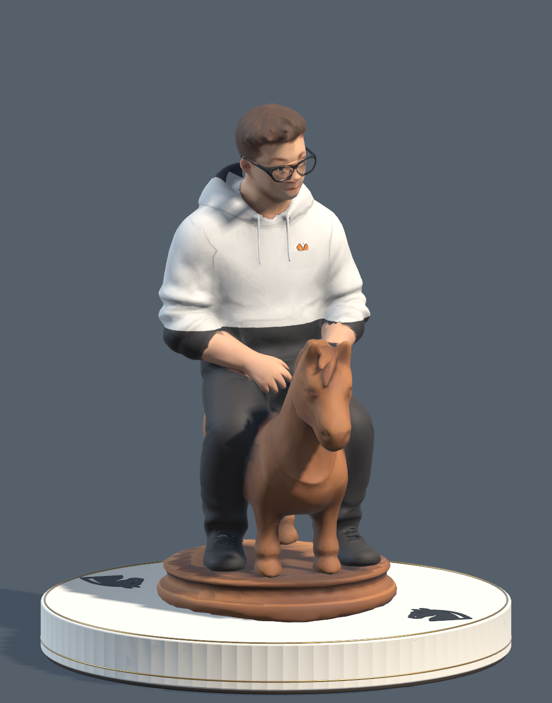
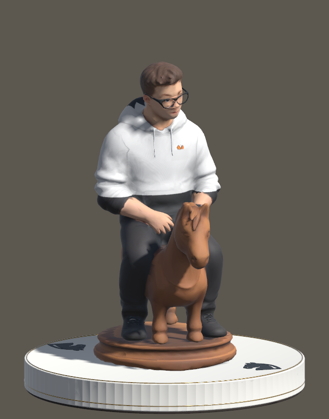
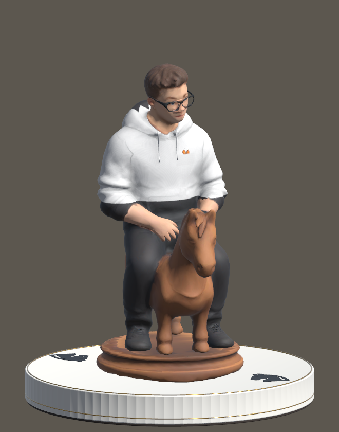
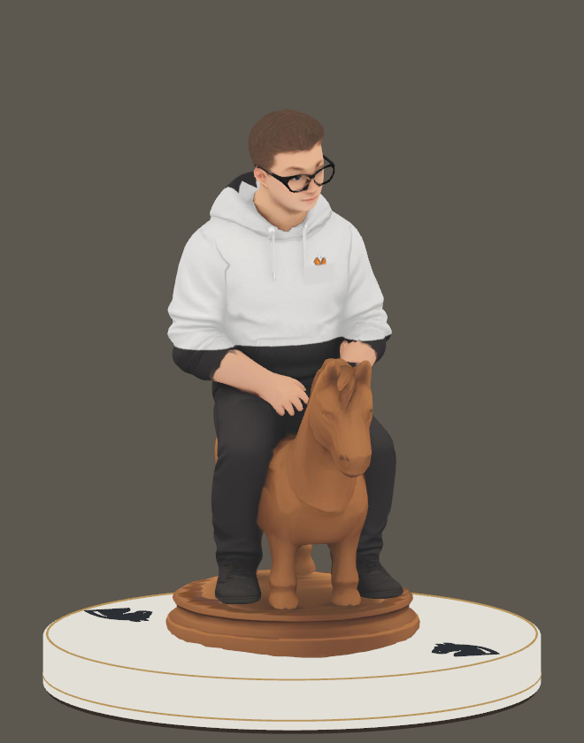
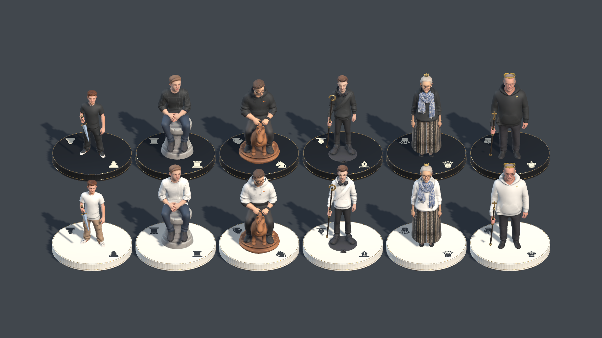
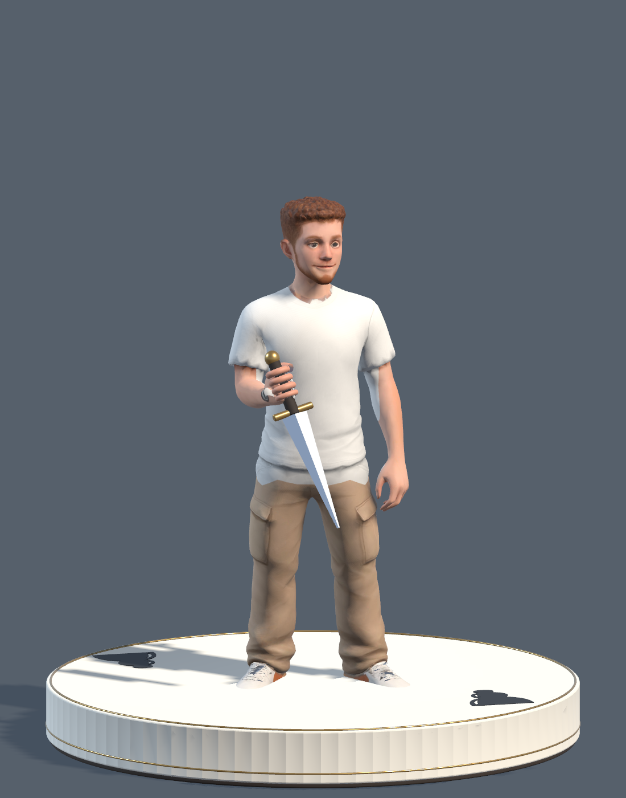
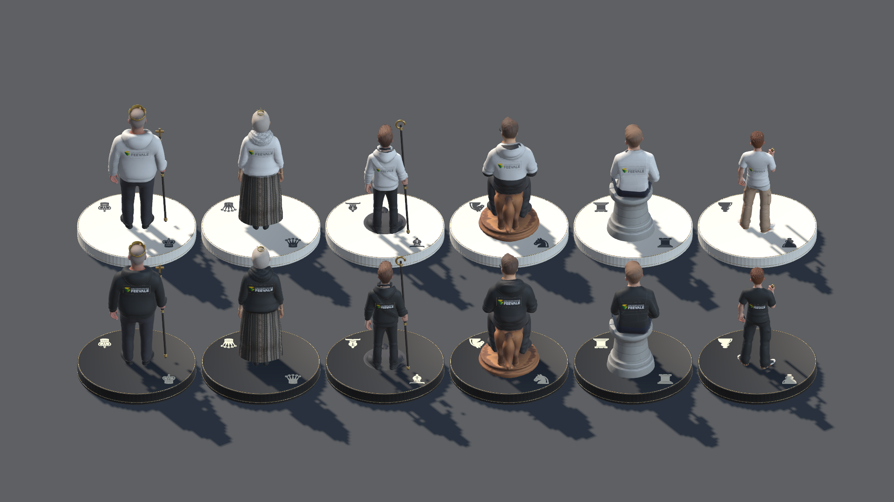

Chess CGI · Revisão local · 25.09.2026
Os próximos ganhos de qualidade
O elenco mantém a identidade da turma. O acabamento ainda precisa ficar mais consistente: contornos de roupa, mãos e materiais, junto com uma iluminação que preserve os detalhes durante a partida.
Gustavo: a roupa e as sombras tinham causas diferentes
A faixa escura vinha da recoloração terminando no meio do moletom. O contorno agora acompanha a cintura sentada e inclui os punhos e o capuz. A mancha triangular da calça vem da sombra e continua indicada para a revisão de iluminação.



Como distingui tecido, sombra e falha de malha
O teste manteve o modelo e a câmera. Ao desligar apenas as sombras, a mancha na calça desapareceu; a faixa do moletom continuou. O material sem iluminação também mostrava a faixa: ela estava na cor da roupa.



Desligar as sombras foi um teste de diagnóstico. A iluminação do jogo permanece preservada.
Menu e partida · percurso avaliado
06 · Elenco: identidade boa, acabamento desigual
Os dois lados são reconhecíveis. De perto, o nível de detalhe ainda varia entre rosto, roupa, mãos, adereço e base.



Matheus · peão
Preservar
Melhorar
Critério para aceitar
Bases, símbolos e Feevale

As bases distinguem os lados, mas são visualmente pesadas e estriadas. A antiga base sob alguns personagens cria pedestais empilhados. Os símbolos precisam ser julgados no tamanho da partida. A Feevale está legível no close, mas o retângulo com borda visível merece integração melhor ao tecido, mantendo a marca nas costas.
Ordem recomendada para a próxima etapa
- Roupa e luz. Refinar barras, golas e punhos; equilibrar sombras e brilho para preservar dobras nas brancas e volume nas pretas.
- Enquadramento, tabuleiro e HUD. Reservar espaço para a seleção, aproximar o acabamento da partida ao menu e adicionar coordenadas discretas.
- Mãos, rostos, cabelo e materiais. Modelagem e pintura localizadas em cada personagem; uma textura maior sozinha não cria os detalhes ausentes.
- Leitura e custo em VR. Testar símbolos, escala e contraste no headset; medir o custo antes de definir níveis de detalhe.
Nesta revisão, a implementação se concentra na roupa do Gustavo. As demais melhorias são propostas fundamentadas nas capturas, ainda não aplicadas ao jogo.